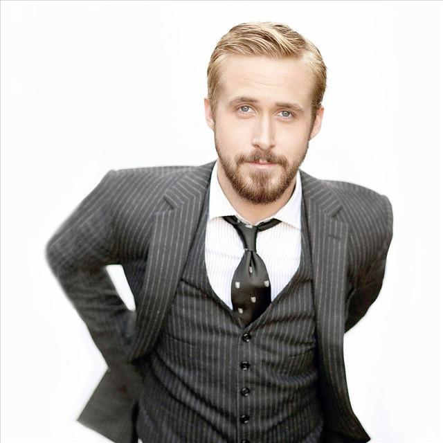

|
Ryan Gosling unexpectedly found himself the subject of an internet meme that took on a life of its own. The phenomenon, known as "Ryan Gosling Won't Eat His Cereal," originated when a Vine user, Ryan McHenry, playfully created short video clips in which he pretended to feed Gosling spoonfuls of cereal on his television screen while the actor, in various movie scenes, consistently refused the imaginary meal. This playful and amusing series of Vines quickly went viral, turning into an internet sensation and garnering widespread attention.
Despite the lighthearted nature of the meme, Gosling embraced the internet's whimsical take on his on-screen persona. In a touching tribute to McHenry, who unfortunately passed away in 2015, Gosling posted a Vine of himself finally eating cereal as a nod to the creativity and humor that emerged from the internet community. This unexpected meme not only showcased Gosling's sense of humor and willingness to engage with his fans in unconventional ways but also highlighted the power of social media in creating unique and endearing connections between celebrities and their audience. |
|  |
The reason why I chose to make a biography about Ryan Gosling is because of how much I like his acting and movies. I first found out about him through memes rather than in movies, which made me develop interest in him. One of my favorite movies of Ryan Gosling is "Drive", which is a masterpiece in my opinion.
He is definitely considered one of the most recognized actors nowadays, especially for his role in "Blade Runner 2049", which is the movie that made him the most famous. Ryan Gosling has made a big mark in movies. He's known for taking on tough roles and picking movies with interesting and different stories, making him one of the most well-known actors around. I like watching his movies, and I'm curious to see how his career grows and the impact he'll keep making in the entertainment world. |